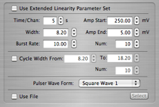
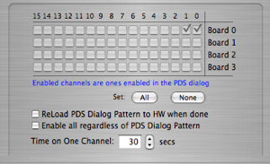
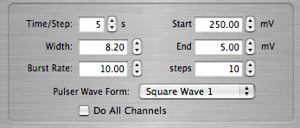

NCD Tasks


The NCD experiment defines several tasks that are managed by the ORCA Task Master, four of which are described here. Since the NCD experiment is no longer running, it is unlikely that these tasks will ever be used again.
Gain and Linearity Calibration
This is a standard task that has the normal task control part. Here is the optional part:

This task has two sets of parameters, a normal set and an extended set. Use the check box at the top to select which set is to be used. The purpose of this task is to send a number of different amplitude pulses to the channels selected in the the PDS step thru task. The 'Cycle Width' option will loop thru all the amplitudes while sweeping the pulse widths as well.The width, burst rate, and wave form parameters will be sent to the Pulser object for the duration of the task. The pulser's original settings will be restored when the task is finished. A pulser object must be in the configuration for this task to work.
A Pulser Distribution object must be in the configuration for this task to work.
If the 'Use File' check box is set, then all of the pulser settings are ignored and the pulser is set up from values in the selected file. The format of the file is:
timeOnChannel0 Amp0 Width0 BurstRate0 WaveForm0
timeOnChannel1 Amp1 Width1 BurstRate1 WaveForm1
...
...
timeOnChanneln Ampn Widthn BurstRaten WaveFormn
Each line of the file will be used as one step for the task. The 'WaveForm' is the index number of waveform from the popup button.
Log Amp Calibration
This is a standard task that has the normal task control part. Here is the optional part:
This simple task cycles thru each of the channels enabled in the PDS step thru task pausing for the specified time on each channel.
A Pulser Distribution object must be in the configuration for this task to work.
PDS Step Thru Task
This is a standard task that has the normal task control part. Here is the optional part:

This task is used to set up the Pulser Distrubution object. Pulses from the PDS will be sent to those channels that are checked. The functions should be self explanatory.
This task can be run standalone, but much of its use is in conjunction with other tasks, i.e. the Gain and Linearity Task. The normal task control part is ignored unless running standalone.
Threshold Calibration
This is a standard task that has the normal task control part. Here is the optional part:

The settings should be self-explanatory, except for possibly the 'Do All Channels' check box. If checked, pulses will be routed to all channels. If NOT checked, then a mask will be formed from the setting of the PDS step thru task and pulses will be sent only to those channels.